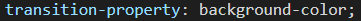
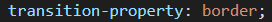
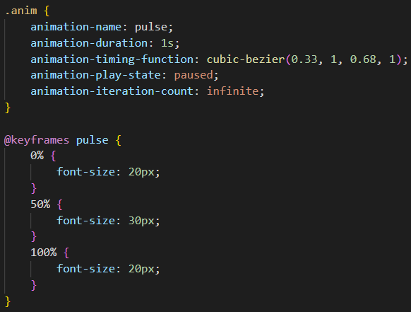
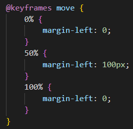

Animacje i przejścia w CSS
Oliwier Kozioł
Maksymilian Młodzik
Przejścia
- Przejścia pozwalają na płynną zmianę wartości, przez określony czas.
- Do określenia przejść używa się tych właściwości:
- transition
- transition-duration
- transition-delay
- transition-property
- transition-timing-function
transition-duration
Określa długość trwania efektu przejścia.
transition-delay
Określa czas opóźnienia efektu przejścia.
transition-property
Określa właściwość, którą ma dotyczyć efekt przejścia.


transition-timing-function
- Określa tempo efektu przejścia.
- Ta właściwość może mieć takie wartości:
linear
ease
ease-in
ease-out
ease-in-out
cubic-bezier
steps
Selektory :hover, :active, :focus
Przykłady przejść z tymi selektorami
Animacje
- Aby stworzyć animację, najpierw trzeba określić właściwości:
- @keyframes
- animation-name
- animation-duration
- Do określenia animacji używa się również tych właściwości:
- animation-delay
- animation-timing-function
- animation-iteration-count
Przykład (kliknij)

@keyframes
- Określa klatki kluczowe, przez które przechodzi dany element w trakcie animacji.
- Może byc określona za pomocą:
- procentów, np. 0%, 25%, 50%, 75%, 100%
- from i to, które reprezentują 0% i 100%
Przykład

Koniec